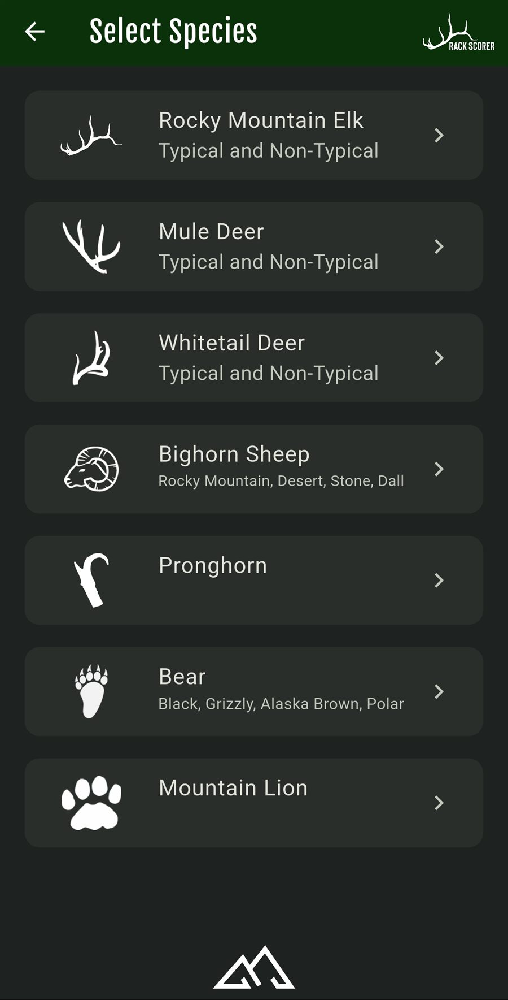
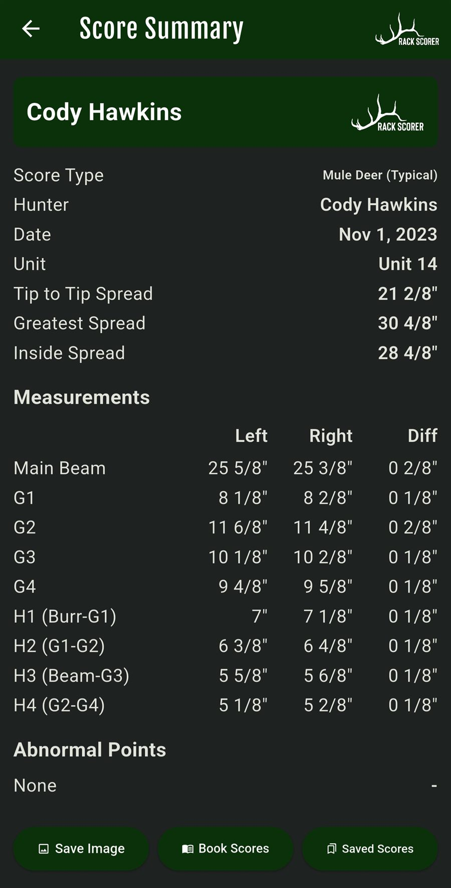
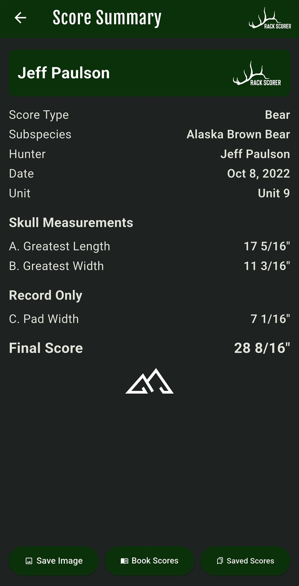
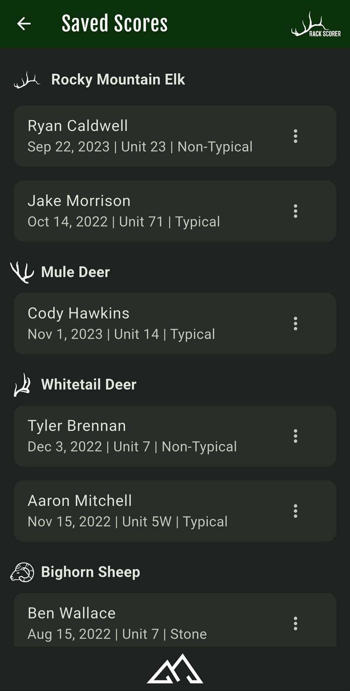
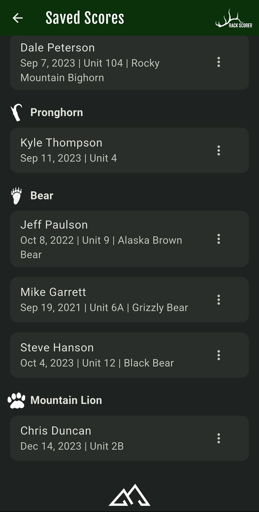
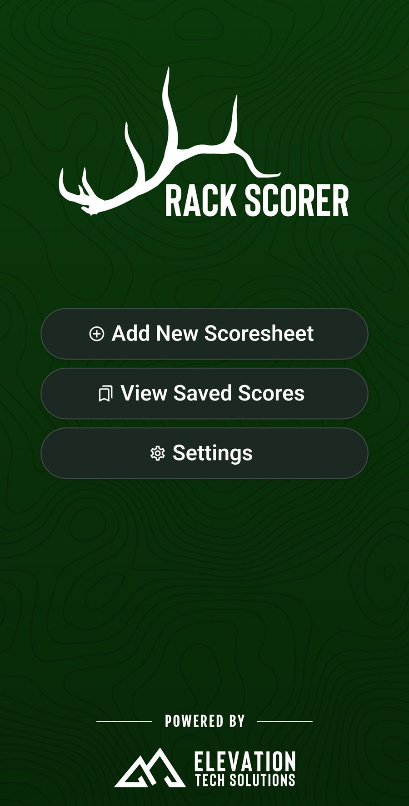

Screens
A look inside






Swipe, drag, or use the arrows to browse. Screens show sample scoresheets.
Score it properly at the tailgate — no folded paper sheet, no arithmetic, no signal.
Boone & Crockett and Pope & Young style scoring for seven species groups across thirteen categories. Enter each measurement in inches and eighths, watch gross and net totals recalculate as you go, then save the sheet and share the summary.
$4.99 one-time — no subscription, no ads. Works fully offline. Android phones and tablets.

The math is the part people get wrong — deductions, mass measurements, abnormal points. Rack Scorer does that part for you while you handle the tape.
Choose the species and whether you're scoring typical or non-typical, plus the subspecies where it matters — Desert versus Rocky Mountain bighorn, black bear versus Alaska brown.
Inches and eighths in separate fields, so there's no decimal conversion in your head. A reference diagram sits right on the entry page showing exactly where each measurement is taken.
Gross and net update live as you type. Save the finished sheet, export it as a summary image to send to camp, and check it against book minimums.
Antlers, horns and skulls — each with the correct scoring method for that category, not a generic form.
Typical and non-typical, six G-points per side, mass measurements and spread credit.
Typical and non-typical, four G-points per side, with abnormal points handled separately.
Typical and non-typical, four G-points per side, H1–H4 circumferences.
Horn lengths, D1–D4 circumferences and quarter positions. Rocky Mountain, Desert, Dall and Stone.
Horn lengths, prong lengths, circumferences at each quarter, tip-to-tip and inside spread.
Skull length plus width in sixteenths, with pad width recorded. Black, Grizzly, Alaska Brown and Polar.
Skull scoring in sixteenths, same method as bear, with its own reference diagram.





Swipe, drag, or use the arrows to browse. Screens show sample scoresheets.
Side totals, mass measurements, difference deductions and abnormal points, all applied the way the category requires.
Every category ships with its own reference diagram plus written scoring instructions, so you can check where a measurement is taken without leaving the sheet.
Built-in minimums so you can see immediately whether the animal makes a book — per species and per subspecies.
Saved scores are grouped by species and tagged with hunter, date and unit, so a decade of sheets stays organised.
Export a summary image of the completed scoresheet — branded, readable, and ready to send to camp or the taxidermist.
Everything runs on the device. There is no account, no sync and no server — which is exactly what you want at the back of a canyon.
Not a marketing line — the app has no networking code in it at all.
Hunter names, dates, units and measurements stay in local storage on your phone. Nothing is uploaded, because there is nowhere to upload it to.
No analytics package, no advertising identifier, no crash telemetry. There is nothing in the app measuring what you do with it.
A sheet only goes somewhere when you export or share it yourself, and it goes wherever you send it — not through us.
Because we hold nothing, uninstalling removes your saved sheets for good. Export the ones that matter.
The full detail is in the Rack Scorer Privacy Policy.
Watch a sheet filled out from first measurement to final net score.
No subscription, no per-sheet fee, no ads.
Buy once, use it every season · no subscription · no ads · no in-app purchases
Android only for now — an iOS version is in the works. Questions? Email elevationtechnology@outlook.com
Same shop, same approach — your data stays yours, and everything works where the signal doesn't.